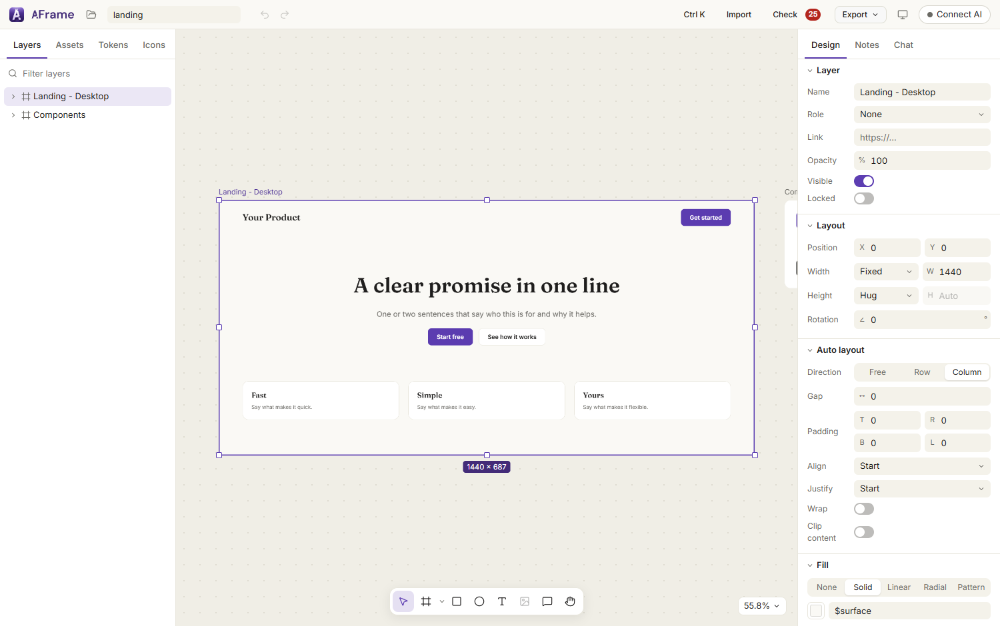
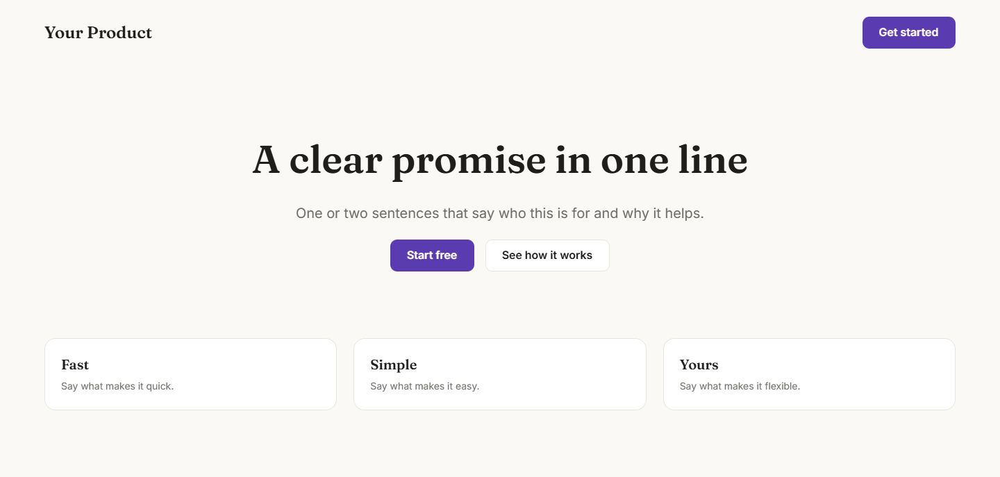
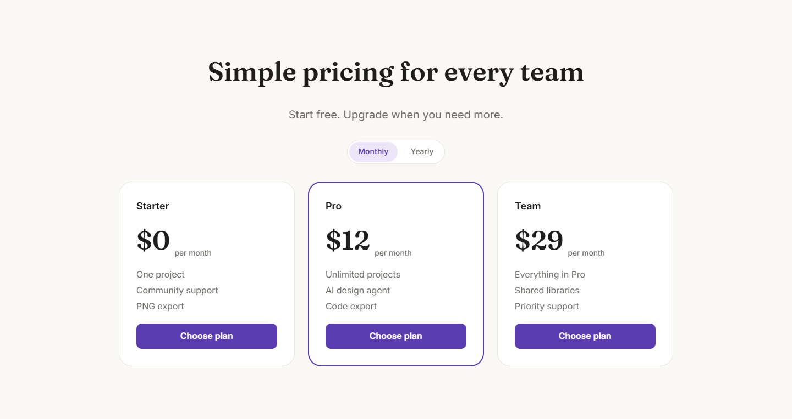
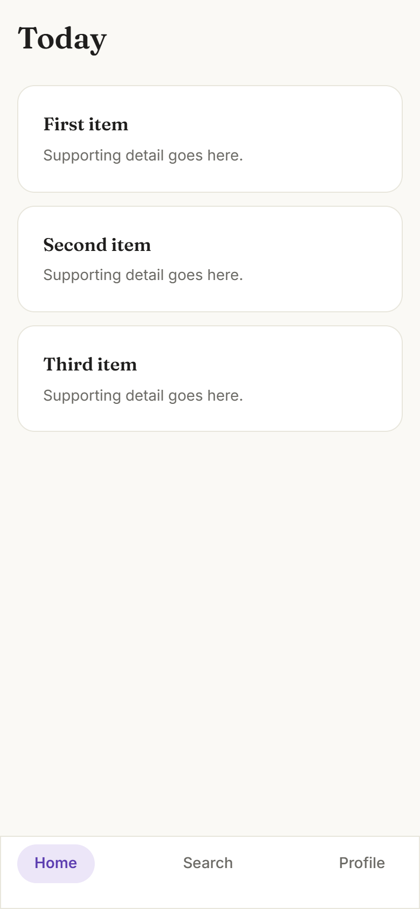

Free and open source · MIT licence
Design product UI
with your AI.
AFrame is a design canvas that Claude Code or Codex can build on while you watch. It uses real auto-layout and design tokens, checks its own work with screenshots, and exports what you approve as HTML, React or Tailwind.
Runs on your own computer · no account · no telemetry

From a sentence to a screen you can ship
-
1
Connect your AI
Press Connect AI in the app and paste one line into Claude Code, Codex or Cursor. Or add an API key and use the built-in chat.
-
2
Ask, then watch
“Improve this pricing page.” It reads the design, edits the canvas, and takes screenshots to check its own work. One undo reverses a whole turn.
-
3
Steer and export
Drop numbered notes on anything you want changed, run Check, then export the frame as code.
Built for real interfaces
-
Auto-layout that is real CSS
Frames lay out as actual flexbox with fixed, hug and fill sizing, so what you see is what exports.
-
Tokens and components
Colours, fonts and radii are variables. Components carry hover, pressed, disabled and selected states, and every copy follows.
-
Design checks
Check flags low contrast, tiny text, off-scale spacing and near-miss alignment, with one-click fixes.
-
Code out
HTML + CSS, React + CSS Modules or React + Tailwind. Variables stay variables, images become files, and class names stay stable between exports. PNG and SVG too.
-
Notes and references
Pin numbered notes to the canvas and attach reference images. Your AI reads them, fixes them and replies.
-
Bring designs in
Import SVG as editable layers, a Figma frame, a captured web page, or any image for your AI to rebuild.
-
Local and private
Projects are plain JSON files on your disk. API keys live in your system keychain. No account, no servers of ours.
-
Open source
MIT licensed. Read it, change it, send a fix.
Start from a template
Each comes with a token set and a small component kit. These are the real screens, as exported by the app.



There is also a SaaS dashboard, a blank canvas, and three game UI templates.
Download
macOS and Linux
Each release also builds them automatically. We have not been able to test those builds yet, so treat them as experimental.
- Windows may warn you. The installer is not code-signed yet, so SmartScreen can say “Windows protected your PC”. Choose More info, then Run anyway, if you trust this page.
- You need an AI that speaks MCP (Claude Code, Codex or Cursor, with Node.js 20 or newer for the connector), or your own Anthropic or OpenAI-compatible API key for the built-in chat.
- Early software. It is a pre-release: the screens, export, checks and imports are tested on Windows and in Chrome. Live runs against a real Figma file and other operating systems are still ahead.